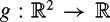

|
| |||||||||||||
|
|
||
Consider a vector-valued function where f can be written
where for i ∊{1, 2,…,n}.
We define the differential of f to be the matrix[1]
The matrix Df is denoted in a number of different ways. It is sometimes called the Jacobian of f and denoted J (see chapter 3). It is sometimes called the tangent map of f and denoted Tf. Sometimes it is necessary to specify which variables are used in the differentiation. Hence the differential can also be denoted . Putting the variable name in the subscript serves a similar purpose. The symbols Dx f, Jx, and Tx f all denote the differential of f with respect to the variable x.
Given a function , the gradient of g is defined to be
As in the case of the differential, the notation ∇xg is sometimes used to make explicit the fact that g is differentiated with respect to x. The vector ∇g(x) points in the direction that maximally increases the function at the point x. Note that by this defintition ∇ f(x) = DfT. The decision as to whether the gradient should be a row vector or a column vector is somewhat arbitrary. In this book we define it as a column vector because that is the convention commonly used in the robotics community when discussing planning algorithms based on artificial potential fields.
Let c(t) be a smooth curve in , i.e., c is a C∞, vector-valued map . If t is time, the derivative
can be thought of as the velocity of a point moving along c(t).
For a real-valued function , one is often interested in how the value of the function g changes as the state follows the trajectory c(t). This is the same as finding the derivative of g(c(t)) with respect to t, , where (g ∘ c)(t) = g(c(t)) is called the composition of g and c. To calculate we can use the chain rule, which can be stated in a number of different ways:
Note here that  denotes the partial derivative of g with respect to xi evaluated at xi = ci(t). Likewise, and Dcg denote the differential of g with respect to x evaluated at x = c(t). When it is necessary to be explicit, these quantities are sometimes denoted as or Dx |x = c(t).
denotes the partial derivative of g with respect to xi evaluated at xi = ci(t). Likewise, and Dcg denote the differential of g with respect to x evaluated at x = c(t). When it is necessary to be explicit, these quantities are sometimes denoted as or Dx |x = c(t).
Sometimes it is useful to be able to see how g changes when the curve c is represented in different coordinates than those for which g is defined. Let h : be the smooth change of coordinates that maps from the coordinates in which c is defined (y-coordinates) into the x-coordinates required by g, i.e., x = g(y). So we are interested in seeing how g(h(c(t))) = (g ∘ h ∘ c)(t) evolves with t. Again, the chain rule allows us to express this quantity in a number of different ways:
In the second of these expressions the dimension of each of the three objects on the right-hand side is written below the underbrace. This is to make it clear that the dimensions are suitable for matrix multiplication and that the resulting product is indeed a scalar.
Consider the curve defined in polar coordinates

Note that this curve corresponds to a point moving around a circle of constant radius 2 at a velocity of 4π, i.e., the point travels around the circle once every second. Now consider a function  defined in Cartesian coordinates
In order to compute ġ, we introduce a coordinate change that maps the vector y = [y1, y2]T = [r, θ]T in polar coordinates into Cartesian coordinates:
Using the chain rule we get
| (C.2) |
|
This can be checked by differentiating (g ∘ h ∘ c)(t) = 2 cos(2πt) directly to get the same answer.
The chain rule can be used in a similar manner to differentiate compositions of functions of any compatible dimension. For example, if we redefine the functions h and g so that and , then the chain rule gives the derivative of the composition
A remark about rows and columns: In mechanics, a force vector F is usually represented by a row vector as it is a member of the cotangent space (see chapter 12). Velocity vectors belong to the tangent space and are usually represented as column vectors, e.g., v. This allows us to easily take the product Fv to get power, which is a scalar value. Many mechanics texts use up-down indicial notation to facilitate this, but such notation is not required for this book.
[1]To be technically accurate, the differential is actually a map from the tangent space of (which happens to also be ) to the tangent space of (which is ). For the purposes of this appendix, we simply represent Df as an n × m matrix.
|
|
||
|